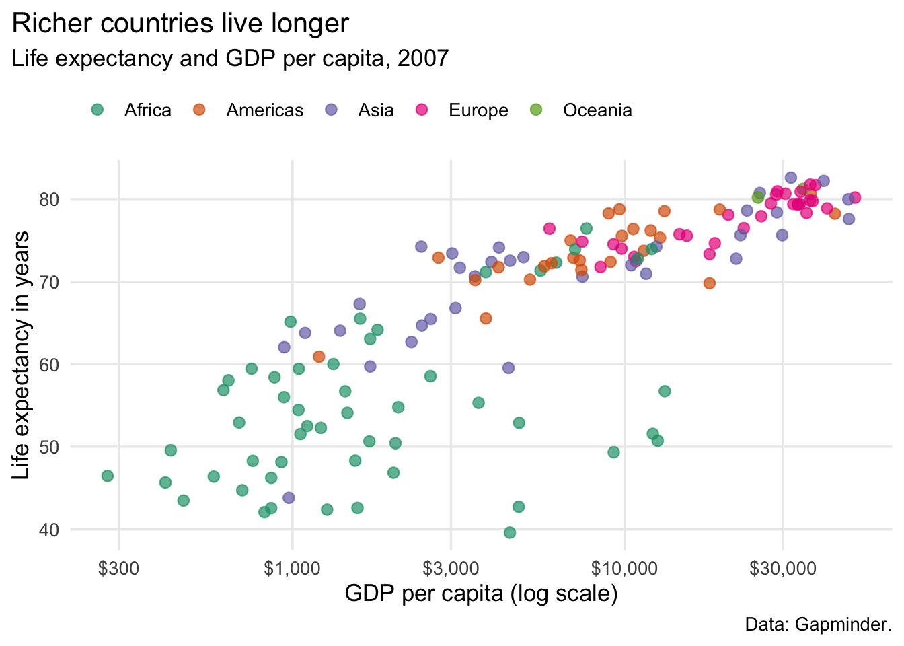

![]()
library(ggplot2)
library(dplyr)
gdp_data <- DataScienceExercises::gdplifexp2007 # the data from session 8Lab 9: Using AI for coding
Worksheet
Work in pairs. You need a free AI chat assistant in your browser — any one you like. Nothing to install in R beyond what you already have.
All three rounds work on one chart:
In 2007, how much does life expectancy vary within each continent — and which country has the lowest life expectancy in each?
Two rules for today:
- Write down your minutes in each round, in the log table at the end. How long it took is part of the result.
- Every chunk may fail — that is fine (
error: trueabove keeps the document rendering). Note what failed.
Setup
str(gdp_data)Classes 'data.table' and 'data.frame': 142 obs. of 5 variables:
$ country : chr "China" "India" "United States" "Indonesia" ...
$ continent: chr "Asia" "Asia" "Americas" "Asia" ...
$ lifeExp : num 73 64.7 78.2 70.7 72.4 ...
$ pop : int 1318683096 1110396331 301139947 223547000 190010647 169270617 150448339 135031164 127467972 108700891 ...
$ gdpPercap: num 4959 2452 42952 3541 9066 ...
- attr(*, ".internal.selfref")=<pointer: 0x0> Round 1 · Just ask (10 min)
Type one sentence into your assistant — the way you would if you were in a hurry. Do not explain the data. For example: “make a chart of life expectancy by continent”.
Your prompt:
Paste the code you get into the chunk below and run it. If it uses a different data object or file than gdp_data, change only that name.
# paste the AI's code hereAnswer in one line each:
- Did it run at once? If not, what was the error?
- Does the chart answer our question (variation within continents, lowest country in each)?
- Did the AI write anything about the result — a title, a sentence, a number? Is it true?
Round 2 · Two routes (15 min)
Your lecturer tells you which route your pair takes. Start the clock.
Route P: the good prompt
Fill in every blank, then send the whole prompt to a new chat. The blanks are the point: each one is a decision only you can make.
I work in R with ggplot2 and dplyr. My data frame is called gdp_data and
has one row per country in 2007. Here is str(gdp_data):
[paste the output of str(gdp_data) here]
Question: ____
Chart: x = ____ , y = ____
geom(s): ____ (which geom shows variation within a group?)
label: ____ (which countries get a label?)
Style: write data = and mapping = aes() explicitly; use theme_minimal().
Do not write a title, a subtitle or any numbers. I will.# paste the AI's code hereRoute T: the chart template
Start from the chart template below (the same code, with comments, is in chart_template.R in this project). It makes a scatter plot; change it yourself until it answers our question. You may ask the AI small questions only — one function, one argument — such as “how do I add labels to only some points in ggplot2?”. Do not paste the task.
# The chart template -- change it step by step
my_chart <- ggplot(
data = gdp_data,
mapping = aes(x = gdpPercap, y = lifeExp,
colour = continent)
) +
geom_point(alpha = 0.7, size = 2.5) +
scale_x_log10(labels = scales::label_dollar(accuracy = 1)) +
scale_colour_brewer(palette = "Dark2") +
labs(
title = "Richer countries live longer",
subtitle = "Life expectancy and GDP per capita, 2007",
x = "GDP per capita (log scale)",
y = "Life expectancy in years",
colour = NULL,
caption = "Data: Gapminder."
) +
theme_minimal(base_size = 13) +
theme(
plot.title.position = "plot",
panel.grid.minor = element_blank(),
legend.position = "top",
legend.justification = "left"
)
my_chart
TipHints for route T — open only if you are stuck
- What goes on the x-axis now? Not income — so
scale_x_log10()has to go. geom_boxplot()shows the spread within a group;geom_jitter(width = 0.2)shows every country on top of it.- For the labels, make a small data frame with one row per continent:
lowest <- gdp_data |> group_by(continent) |> slice_min(lifeExp, n = 1)and give it togeom_text(data = lowest, mapping = aes(label = country)). - Do you still need colour and a legend when the continents are on the x-axis? Delete what you do not need. Change the title and subtitle in round 3.
Round 3 · Check and own (10 min)
Take your best chart from round 1 or 2.
Check n
How many countries are in each continent? Is any continent too thin for a box plot?
count(gdp_data, ____)Error in parse(text = input): <text>:1:18: unexpected input
1: count(gdp_data, __
^Recompute one number
Pick one number your chart shows — the lowest life expectancy in Africa, say, or the median in Asia — and compute it yourself, in a different way than the chart code does.
gdp_data |>
filter(continent == "____") |>
summarise(lowest = min(____), median = median(____))Error in parse(text = input): <text>:3:27: unexpected input
2: filter(continent == "____") |>
3: summarise(lowest = min(__
^Write the title yourself
Add a title to your chart that states the finding — every number in it taken from your own output above, not from the AI.
# your final chart, with labs(title = "...")Declare it
Fill in the disclosure template from lecture 2, as you would at the end of a take-home. One short line per row is enough.
| Element | Your entry |
|---|---|
| Tool | name, version (if shown), browser or app, free or paid plan: ____ |
| Used for | ____ |
| What I checked | ____ |
| What I changed | ____ |
| My own | ____ |
| Personal or confidential data | only if you entered any: what it was and why this was permitted ____ |
I checked all AI output that I used and take full responsibility for the content of this work.
Log
| Round | Route | Minutes | Ran at once? | What was wrong or what did you change? |
|---|---|---|---|---|
| 1 | just ask | |||
| 2 | P / T | |||
| 3 | check |
Bring this table to the discussion.
If you finish early ⭐
Ask twice. Send your route P prompt again, in a new chat. Same code? Same chart?
The other route. Do the route your pair did not do. Which was faster?
The average. Ask your assistant for “the average life expectancy per continent”. Does it weight countries by population? Should it? (Think of China and India.)
Make it a snippet. Save the chart template as an RStudio snippet (Tools → Edit Code Snippets, see the appendix of the slides) and insert it with its name and Shift+Tab.
Explain it back. Ask the assistant to explain one line of your final code that you did not fully understand. Then close the chat and explain the line to your partner.